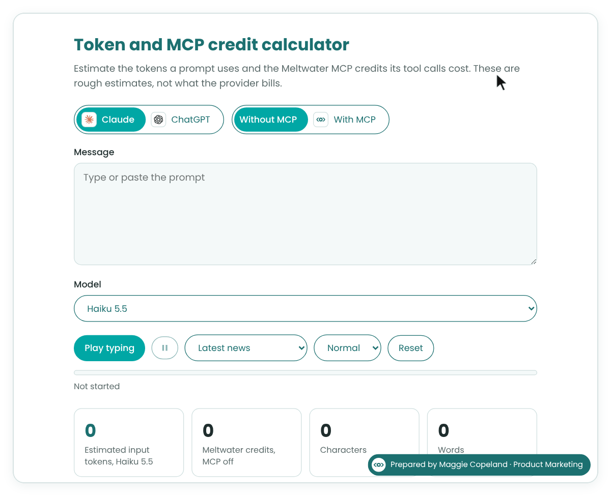
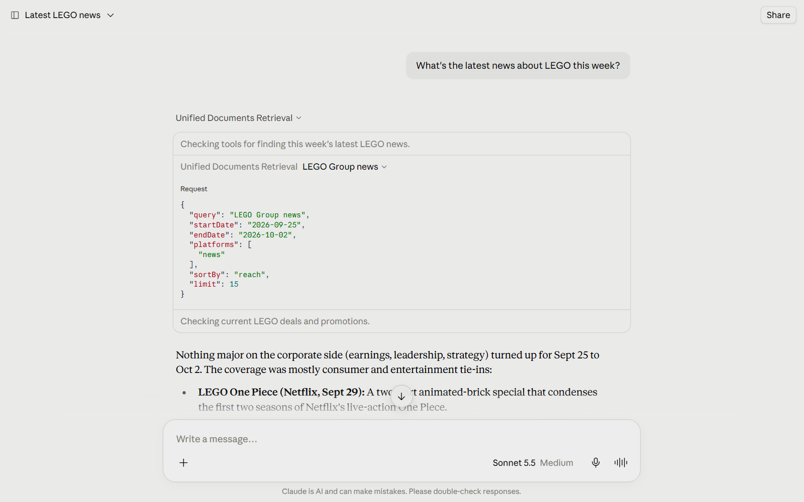
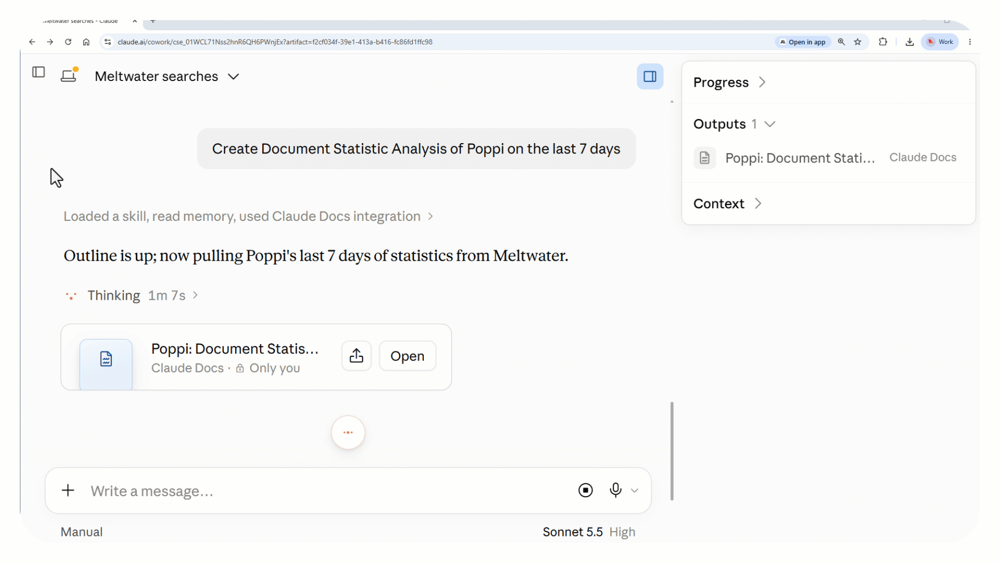
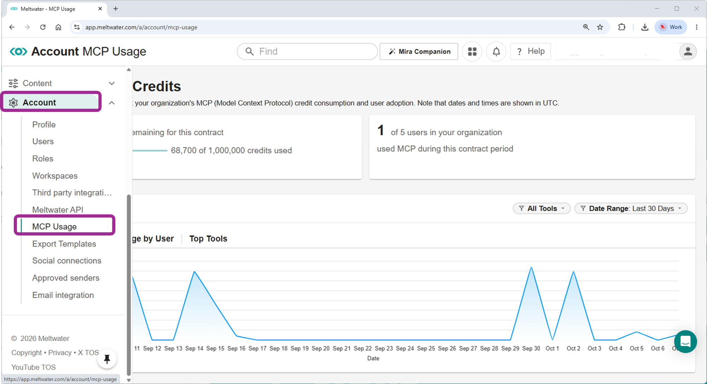
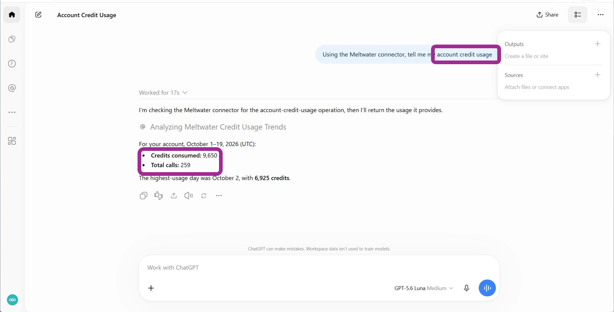
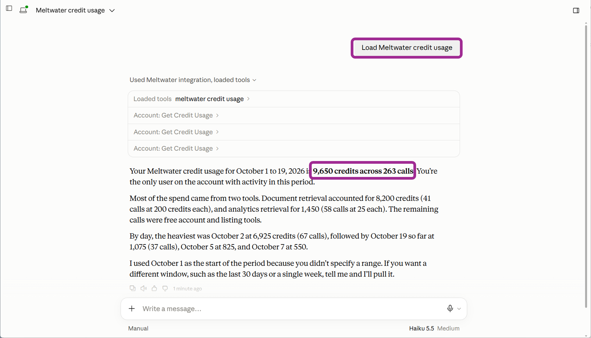

Understanding MCP Credits vs. Tokens
With the new MCP Usage page, Account Admins can now see exactly where their Intelligence Credits go. That raises a fair question: “My AI assistant uses tokens. Meltwater uses credits. Aren’t they the same thing?” We’re here to show you how they’re different.
TL;DR: Tokens are used in every message you send. Credits only get used when your assistant uses Meltwater tools.
Tokens: Billed by Your AI Provider
Tokens measure how much text your AI assistant (Claude, ChatGPT, Copilot and others) reads and writes. Your AI provider bills you for them. Each time you send a message, the assistant:
- Reads your message
- Rereads the whole conversation so far
- Writes its reply
Each of those steps uses tokens, whether or not Meltwater is involved.

Intelligence Credits: Billed by Meltwater
Credits measure the Meltwater intelligence your assistant pulls in using Meltwater MCP. They’re used from your Meltwater credit balance, only when the assistant calls a Meltwater tool. A tool is one task the AI Assistant assigns to Meltwater, like building a search or pulling analytics. The AI assistant chooses the tools needed for each task, but you can guide it.
Each tool call is charged by credit cost, depending on how much work the tool does: You can recognize a tool when you expand its dropdown to see a “request” (might look different in your AI environment).

Multiple Tool Calls Add Up Credits
For the next example, you can ask a question like, “How has Poppi been performing in the last 7 days?” To answer, the assistant calls one Meltwater tool, Aggregate document metrics, to count the Poppi mentions by platform and by day. That call uses 25 credits. The assistant then builds the table and writes the summary. That part costs no credits.

Each call uses credits based on a credit cost assigned at the tool-level. The assistant then builds the comparison table, works out the comparison in text, and writes the explanation. That part costs no credits. The credits are only used in prompts that call Meltwater MCP tools.
Follow-Up Messages Use Tokens, Not Always Credits
Next, you might ask your AI assistant to “Refresh this weekly brief.” It calls Meltwater for fresh data, and those tool calls use credits. Then you say “Now reformat that as bullets.” That second request never reaches Meltwater, because the assistant already has the data. It uses tokens, because the assistant has to reread the thread and rewrite the brief. It uses no credits.
Recap: Prompts Use Text, Credits Are Used When Calling Meltwater
Hope that clarifies it: Prompt length drives tokens. Meltwater calls drive credits.
That’s why a long, extensive conversation can use plenty of tokens and zero credits. It’s also why a four-word prompt can use more credits than you’d expect if it calls several heavyweight tools.
Good to Know
Where to track credits: Account Admins can open Account > MCP Usage to see credit spend by user, by tool and over time.

Anyone on your account with Meltwater MCP can also ask their assistant for usage, even users who aren’t admins. Ask something like “What’s my credit usage?” or “How many credits did this cost?” The assistant uses the account usage tool (account_get_credit_usage) to pull the numbers. Note: Checking usage doesn’t use credits.
By default, the answer covers the current month for everyone on the account. You can ask for a different date range, a specific tool, or a breakdown by month, tool, or user. To check one conversation, ask “How many credits were used?” in that same conversation.


Tips for the account usage tool: Results are most accurate for future conversations. If you try “account_usage” in older conversations, it may not be accurate to future credit measurements.
Where to track tokens: Check your AI provider’s usage or billing settings. Meltwater doesn’t see or charge for tokens.
Making credits go further: Follow-up requests like reformatting, summarizing or rewriting usually don’t call Meltwater again. Being specific up front also helps the assistant pick the right tool the first time.